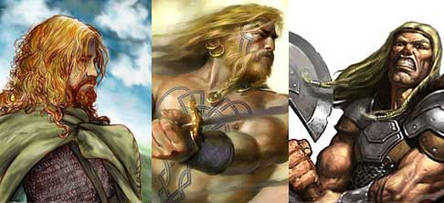
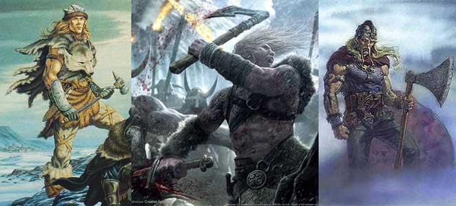

|
PUNTEGGI MINIMI E MASSIMI RAZZIALI PER LE ABILITÀ |
||
| ABILITÀ | MINIMO | MASSIMO |
| Forza | 6 | 18 |
| Intelligenza | 4 | 18 |
| Saggezza | 4 | 18 |
| Costituzione | 6 | 18 |
| Carisma | 3 | 18 |
| Destrezza | 3 | 18 |
|
ABILITÀ DEI LADRI |
PUNTEGGIO INIZIALE |
| Pick Pocket | 15 % |
| Open Lock | 10 % |
| Find/Rem. Trap | 5 % |
| Move Silently | 8 % |
| Hide in Shadows | 3 % |
| Detect Noise | 15 % |
| Climb Wall | 63 % |
| Read Languages | 0 % |
| FATTORE MOVIMENTO BASE | 8 esagoni |
| SENTIRE RUMORI | 15 % |
|
DIMENSIONI E PESO |
SISTEMA DI CALCOLO DELL'ALTEZZA E DEL PESO |
| Altezza del maschio | 137 cm. + 3 cm. per punto di costituzione + 2d12 cm. |
| Altezza della femmina | 124 cm. + 3 cm. per punto di costituzione + 2d10 cm. |
| Peso del maschio | 62 kg. + 2 kg. per punto di costituzione + 1d8 kg. |
| Peso della femmina | 52 kg. + 2 kg. per punto di costituzione + 1d6 kg. |
|
CATEGORIA DI ETÀ |
ANNI |
| Starting Age | 14 + 1d4 |
| Childhood | 0 - 14 |
| Adolescence | 15 - 25 |
| Adulthood | 26 - 40 |
| Middle Age* | 41 - 58 |
| Old Age** | 59 - 87 |
| Venerable Age*** | 88 + |
| Maximum Age | 88 + 1d12 |
* Middle Age: I
personaggi di questa categoria di età perdono 1 punto di forza ed 1 punto di
costituzione, acquisiscono però 1 punto di intelligenza ed 1 punto di saggezza
(non potendo, in ogni caso, superare i massimi razziali).
** Old Age: I personaggi di questa categoria di età perdono 2 punti di
destrezza, 2 ulteriori punti di forza ed 1 ulteriore punto di costituzione,
acquisiscono però 1 ulteriore punto di saggezza (non potendo, in ogni caso,
superare i massimi razziali).
*** Venerable Age: I personaggi di questa categoria di età perdono 1
ulteriore punto di destrezza, di forza e di costituzione, acquisiscono però 1
ulteriore punto di intelligenza e di saggezza (non potendo, in ogni caso,
superare i massimi razziali).


| NOME | Possenza Superiore |
| COSTO IN PUNTI CREAZIONE | 1 |
| REQUISITO PARTICOLARE | PUNTEGGIO IN COSTITUZIONE ALMENO PARI A 12 |
| DESCRIZIONE |
Gli Uomini del Nord
sono vigorosi e possenti per tale motivo alcuni di loro ottengono i seguenti benefici: |
| NOME | Coraggio Vichingo |
| COSTO IN PUNTI CREAZIONE | 1 |
| REQUISITO PARTICOLARE | NESSUNO |
| DESCRIZIONE |
Gli Uomini del Nord
sono conosciuti per il loro coraggio in battaglia per tale motivo coloro
che possiedono questo talento razziale ottengono il seguente beneficio: |
| NOME | Spirito di Sopravvivenza |
| COSTO IN PUNTI CREAZIONE | 1 |
| REQUISITO PARTICOLARE | NESSUNO |
| DESCRIZIONE |
Alcuni Uomini del Nord
hanno uno spirito di adattamento eccellente e sono in grado di adattarsi
a situazioni atmosferiche difficili. Costoro, inoltre sono esperti
cacciatori in grado di sopravvivere lontano dai centri abitati anche per
lunghi periodi di tempo. Per tale motivo coloro che possiedono questo
talento razziale ottengono il seguente beneficio: |
| NOME | Maestri della Forgia |
| COSTO IN PUNTI CREAZIONE | 1 |
| REQUISITO PARTICOLARE | NESSUNO |
| DESCRIZIONE |
Gli Uomini del Nord
sono conosciuti per essere i migliori fabbri umani. Nonostante non siano
molto acculturati, la loro maestria nell'uso della forgia è eccellente.
Per tale motivo coloro che possiedono questo talento razziale ottengono
il seguente beneficio: |
| NOME | Maestri d'Ascia |
| COSTO IN PUNTI CREAZIONE | 2 |
| REQUISITO PARTICOLARE | NESSUNO |
| DESCRIZIONE |
Le armi favorite dagli
Uomini del Nord sono le asce. Alcuni di loro tramandano di generazione
in generazione le tecniche utilizzate con tali armi. Per tale motivo
coloro che
possiedono questo talento razziale ottengono il seguente beneficio: |
| NOME | Resistenza Fisica |
| COSTO IN PUNTI CREAZIONE | 2 |
| REQUISITO PARTICOLARE | PUNTEGGIO IN COSTITUZIONE ALMENO PARI A 12 |
| DESCRIZIONE |
La tempra fisica
superiore degli Uomini del Nord permette loro di ottenere una
particolare resistenza fisica. Per tale motivo coloro che possiedono
questo talento razziale ottengono i seguenti benefici: |
| NOME | Resistenza Nordica |
| COSTO IN PUNTI CREAZIONE | 2 |
| REQUISITO PARTICOLARE | PUNTEGGIO IN COSTITUZIONE ALMENO PARI A 12 |
| DESCRIZIONE |
La tempra fisica
superiore degli Uomini del Nord e la loro abitudine a vivere nelle
fredde lande del nord permette a costoro di ottenere una particolare
resistenza al freddo. Per tale motivo coloro che possiedono questo
talento razziale ottengono i seguenti benefici: |
| NOME | Discendenza Guerriera |
| COSTO IN PUNTI CREAZIONE | 3 |
| REQUISITO PARTICOLARE | NESSUNO |
| DESCRIZIONE |
Gli Uomini del Nord
sono estremamente portati per divenire forti combattenti. Molti dei
migliori e più feroci guerrieri fra tutte le razze umane, infatti,
possono rinvenirsi proprio tra gli Uomini del Nord. Per tale motivo costoro ricevono i seguenti benefici:
|